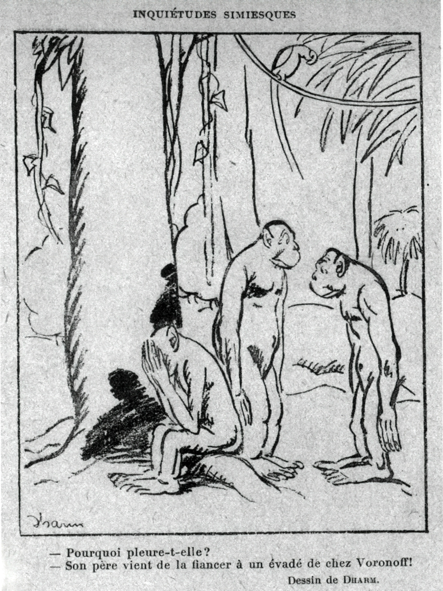
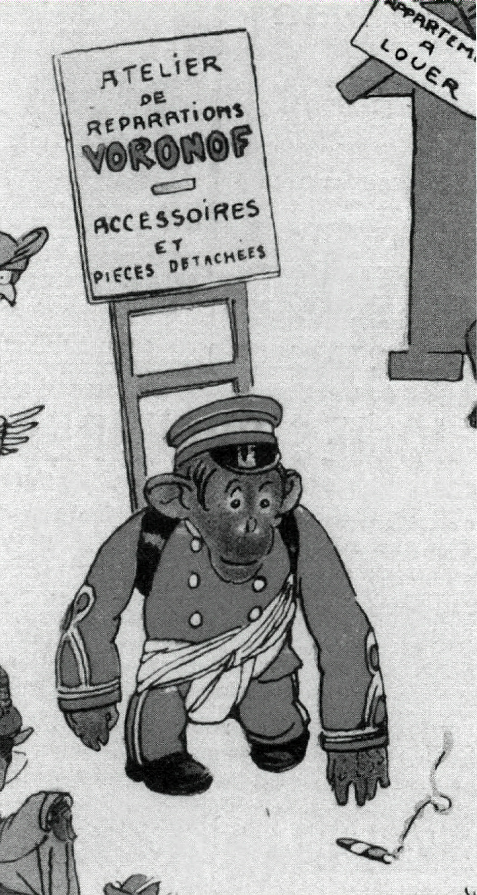

1Prispevek obravnava spremembe v dojemanju starosti in staranja od konca 18. stoletja naprej, ko se je naraven in samoumeven proces, ki je vodil do neizbežne smrti in prehoda v večnost, začel medikalizirati, patologizirati in je postal problem, za katerega je bilo treba najti rešitev. Metode, s katerimi naj bi si podaljševali življenje in se borili proti tegobam staranja, so ostajale skoraj nespremenjene od Hipokrata in Galena naprej, le da so ljudje poleg zdravega življenjskega sloga ter izogibanja razvadam in pregreham lahko vplivali na potek staranja tudi s hitro in zanesljivo pomočjo (psevdo)znanosti, ki je vzbujala veliko optimizma in upanja. V prispevku prikažem najbolj odmevne medicinske in kirurške metode, ki so obljubljale podaljševanje življenja in večno mladost, dvomljive pripravke zdravilcev, ki so se med ljudmi širili po zaslugi oglaševanja, izpostavim pa tudi specifičnost informacij, ki so bile na voljo slovenskemu bralcu.
2Ključne besede: makrobiotika, staranje, dolgoživost, dr. Serge Voronoff, staranje žensk
1The article discusses the changes in the perception of old age and ageing since the end of the 18th century when this phenomenon transformed from a natural and self-evident process leading to imminent death and transition to eternity to a problem for which a solution had to be found through medicalisation and pathologisation. The methods for prolonging life and tackling the issues involved in ageing have remained almost unchanged since Hippocrates and Galen, except that at the beginning of the 20th century, in addition to a healthy lifestyle and the avoidance of vices, it also became possible to influence the course of aging with the help of various (pseudo-)scientific methods that aroused a great deal of optimism and hope. The article describes the most popular medical and surgical methods promising life extension and eternal youth, the dubious preparations of healers that spread thanks to advertising, and points out the specific nature of the information available to Slovenian readers.
2Keywords: macrobiotics, ageing, longevity, Dr Serge Voronoff, ageing women
1Ljudje nikoli v zgodovini niso bili sprijaznjeni s svojo minljivostjo. Kot edina bitja na planetu, ki so si spodobna postavljati eksistencialna vprašanja in se zavedajo lastne smrtnosti in neizbežnosti konca bivanja na tem svetu, so rešitev iskali v veri in prepričanju, da se s smrtjo pravzaprav nič ne konča, da gre zgolj za prehod v novo stanje in novo bivanje, ko naj bi se pravo življenje šele začelo, pa tudi v stapljanju posameznika z okoljem in civilizacijo, ki bo živela dlje in gradila na temeljih, ki jih je postavil umrljiv posameznik. Posameznik je bil tako vedno odgovoren višji sili, Bogu, ki mu je vdahnil življenje, družbi oziroma skupnosti, ki ji je pripadal, z rastočim individualizmom druge polovice 20. stoletja pa tudi novi »sekularizirani religiji«, ki časti zdravje, lepoto in večno mladost.1
2Dosedanje raziskave so pokazale, da so se odnos do staranja ter filozofska in medicinska misel na to temo od antike do 19. stoletja zelo malo spreminjali: opazujemo lahko podobna vrednotenja in celo podobne metode (samo)pomoči.2 Kot vedno prisotna tema se je pojavljalo tudi vprašanje odnosa med dolgim in srečnim življenjem ter prav tako razprave o tem, zakaj naj bi si vsak želel doseči starost. Ves čas lahko tako spremljamo soobstoj dveh nasprotujočih si misli, da staranje ni zlo, temveč čas vrhunca človekovih sposobnosti, hotenj, aspiracij, na drugi strani pa je prepričanje, da je staranje čas zmanjšane aktivnosti, ko nastopita fizično opešanje in skorajšnja smrt.3
3Poplava člankov in priročnikov na temo zdravja in dolgega življenja, pa tudi avtorji sami, ki so propagirali revolucionarnost svojih metod, vzbujajo napačen občutek, da se je hrepenenje po dolgem življenju rodilo konec 18. stoletja in doživelo razcvet v desetletjih potem. Korenine teh prizadevanj pa dejansko segajo precej dlje v zgodovino, saj lahko njihove začetke najdemo že pri Hipokratu in Galenu, njune ideje pa so se nato po piscih iz 12. stoletja in renesansi prenesle vse do razsvetljenstva. Gre za ideje, ki so bile torej vedno prisotne, za katere pa se zdi, da jih je nato vsako obdobje odkrilo na novo in (re)interpretiralo v skladu z vsakokratno miselnostjo in doktrino. Poveličevanje zdravja, lov za večno mladostjo in marginalizacija starosti, staranja in umiranja v 19. in 20. stoletju so bili povezani s prehodom od usmerjenosti v posmrtno življenje k prizadevanju za zemeljsko srečo, kar pa ne pomeni, da je prišlo do izključitve morale, temveč nasprotno. Medicina in morala sta ostali tesno povezani, zato sta bila fizično in duševno pešanje, ki sta veljala za sestavni del staranja, pogosto še vedno predstavljena kot kazen za neposlušnost.4 Svetost in dolgoživost sta šli z roko v roki.5
4V pričujočem prispevku se osredotočam na dojemanje starosti in staranja od konca 18. stoletja naprej in izpostavljam specifičnost informacij, ki so bile na voljo slovenskemu bralcu. Iz dosedanjih socialno-zgodovinskih raziskav tega obdobja izhaja, da naj bi se prizadevanja za odrešitev v posmrtnem življenju pod vplivom vse bolj očitne sekularizacije in laicizacije zahodne družbe umikala prizadevanjem za srečo v tem, zemeljskem življenju. Iz naravnega in samoumevnega procesa, ki je vodil do neizbežne smrti in prehoda v večnost, se je staranje medikaliziralo, patologiziralo in postalo problem, za katerega je bilo treba najti rešitev. Na podlagi poljudnih priročnikov in nasvetov v časopisju, ki so bili osrednji predmet raziskave, pa je mogoče trditi, da ta prelom na Slovenskem ni bil tako drastičen kot v bolj laiciziranih družbah. Bolj kot o zamenjavi enega cilja z drugim, torej večnega življenja z zdravjem, dolgim življenjem in užitki na tem svetu, je na Slovenskem mogoče govoriti o stapljanju obeh. Metode, s katerimi naj bi si podaljševali življenje in se borili proti tegobam staranja, so ostajale skoraj nespremenjene od metod, s katerimi naj bi bilo mogoče doseči zveličanje, vrednote, ki so bile podstat vsega, pa prav tako. Še celo v 20. stoletju so s pomočjo natančno predpisanih prehranskih režimov periodičnega postenja in prečiščevanja, pravil glede gibanja, dela in osebne higiene ter predvsem izogibanja razvadam in pregreham tako teologi in moralisti kot tudi zdravniki in drugi avtorji priročnikov podaljševali življenjsko dobo, ohranjali telesno zdravje, kot tudi reševali umrljivo dušo.6
1Priročniki, ki so obravnavali zdravstvene tematike, zdravo prehrano in pravilen življenjski slog, so izhajali že pred razsvetljenstvom, pri čemer dolgoživost še ni bila izpostavljena kot primarni cilj.7 Podobne ideje so tematizirali številni avtorji od 15. stoletja dalje.8 Še v 19. stoletju je bilo med ljudmi trdno zasidrano prepričanje, da je zdravje mogoče ohranjati z nadzorom intenzivnosti vzdraženja in porabe energije. Hufeland je npr. uporabil starodavno metaforo o sveči, ki izgoreva in ki naj bi bila simbol omejene količine življenjske sile, dane na voljo vsakemu posamezniku: porabo slednje naj bi bilo mogoče pospešiti ali upočasniti, posameznikova odgovornost pa je bila, da s svojo svobodno voljo vpliva na to, da bo njegova energija trajala kar najdlje.9 Ta teorija je bila tako razširjena, da so nekateri avtorji izdelali celo lestvico stopenj vzdraženj oziroma izgorevanja življenjske sile in dajali terapevtska navodila, kako na pravilen način vzdraženje tudi zmanjšati, le redki pa so, tako kot Hufeland, odločno izražali optimistično prepričanje, da je bilo vitalno energijo mogoče tudi krepiti – da ne gre le za zalogo energije, ki se zgolj troši. Ker se vitalna energija torej tudi regenerira, je življenje mogoče tudi podaljšati.10 Optimistični pisci 18. stoletja so bralcem obljubljali celo, da jim bo popolno upoštevanje njihovih navodil prineslo ne samo zaustavitev procesa staranja, ampak celo regeneracijo in obraten proces, ki naj bi nastopil v najvišji starosti, ko naj bi ljudem ponovno zrasli zobje in lasje. Če so ljudje torej želeli v polnosti izkoristiti čas, ki jim je na Zemlji dan od Boga, naj bi sledil predvsem glavnemu načelu: zlati sredini v vsem.11
2Ob prehodu iz predmoderne v moderno znanost o telesu in staranju v 19. stoletju so ideje, ki so se naslanjale na Galenovo tradicijo, izginile iz uradne medicine, ne pa tudi iz poljudnih priročnikov, kjer ostaja vera v ravnovesje in zmernost še vedno trdno zasidrana.12 Procesi pomlajevanja in podaljševanja življenja ob koncu 19. in v 20. stoletju tako spadajo v tri kategorije, ki niso bile vedno povsem ločene med sabo: medicinske in kirurške metode, ki naj bi temeljile na znanstvenih dognanjih, nove znanstvene oziroma psevdoznanstvene metode, ki so vzbujale veliko optimizma in upanja, obskurne tehnike in pripravki različnih mazačev in vedno aktualne tehnike (npr. kopeli, postenje, redno odvajanje, zmernost).13 V priročnikih lahko zasledimo sezname prijateljev in sovražnikov dolgega življenja, ki se v obravnavanem dvestoletnem obdobju skoraj ne spreminjajo. Primerjava nasvetov Hufelanda in Loranda npr. pokaže skoraj popolno ujemanje, čeprav je med njima več kot sto let razlike, saj oba poudarjata pomen zmernosti, čistoče, zdravega bivalnega okolja, izogibanja popivanju, kajenju in prenajedanju ter pomen srečnega zakona.14 Starost sama po sebi še ni veljala za bolezen in patološko stanje, bralce naj bi bilo treba zgolj podučiti, kako naj upravljajo z lastnimi telesi in svojim umom. Ne samo zmernost in življenje na podeželju, pomembni naj bi bili tudi duševni mir, srečen zakon, skromnost, zadovoljstvo s tem, kar imajo, in obenem upanje in vera v boljši jutri.15
3Avtorjem priročnikov je bilo skupno tudi optimistično prepričanje o pomenu izobrazbe in osveščanja ljudi ter o možnostih izboljšav tako na ravni posameznika kot na ravni družbe.16 Ne gre torej toliko za revolucionarnost in prelomnost idej, temveč bolj za to, komu so bili ti priročniki za samopomoč namenjeni in kdo je bil sploh vreden pozornosti piscev.17 Glavne novosti tega obdobja so bili obrat k širšim ljudskim množicam in poskusi sestaviti sistem obče veljavnih, znanstveno preverjenih, zanesljivih pravil in navodil, ki bi jih lahko sprejeli in izpolnjevali vsi in ne bi bila dosegljiva zgolj eliti oziroma meščanskemu sloju.18 Opazna je torej demokratizacija: dolgo življenje je dostopno vsem in je pravica vseh, tisti, ki živijo v pomanjkanju, so še celo v prednosti, saj ni nevarnosti, da bi se prenajedali, prenažirali z mesom in posegali po drugih »strupih«.19
4V tradicionalnih nasvetih za dolgo življenje, ki so privzgajali občutek odgovornosti posameznika do lastne usode, pa tudi do širše okolice, so se prizadevanja za večno življenje zlila s prizadevanji za dolgo in zdravo življenje. Postavlja se torej vprašanje, v kolikšni meri lahko v tradicionalni družbi 19. in prve polovice 20. stoletja sploh govorimo o »materialističnem« pogledu na človeka. Morala je ostala trdno zakoreninjena na področju medicine, meje med telesnim in moralnim pa so bile povsem zabrisane. Zdravje telesa naj bi bilo, tako kot prej večno življenje, odvisno tudi od spoštovanja moralnih norm. Medicina in zdravljenje torej nista bila edina zaslužna za zdravo življenje, povsem enako pomembna sta bila tudi morala in razum, ki naj bi človeka vodila do spoštovanja družbenih pravil. Stroga moralna drža in dolžina življenja sta bili torej neločljivo povezani.20
1Medikalizacija starosti v 18. in 19. stoletju je bila del širših premikov, ki so izhajali iz sekularizacije evropske kulture, in poskusov prenove človeka in sveta. Vzroki za staranje in telesni propad naj bi bili sicer biološki, vendar pa naj staranje le ne bi bilo popolnoma predeterminirano – tako kot npr. puberteta, ki se pod vplivom razvoja in hormonov začne neodvisno od naše volje. Človek je z zdravim življenjskim slogom lahko vplival na naravo procesa staranja, pomembna novost pa je bila, da je tokrat prvič imel še izhod v sili: lahko je računal na hitro in zanesljivo pomoč znanosti. Širijo se optimizem in idealizem ter vera v nove metode, ki bodo zanesljivejše, hitrejše in dostopne vsem.21 Raziskovalci so se poskušali prebiti neposredno do korenine problema z reševanjem človeških strukturnih pomanjkljivosti. Znanost in medicina sta dopolnjevali prevzgojo in ponujali vse več metod, ki naj bi človeka preoblikovale na fizični ravni. Cilj je bilo ustvarjanje novega človeka, drugačnega od krhkega, šibkega, minljivega sužnja strasti in razvad.22
2Vera v znanost je bila tako vseobsegajoča, da se nič ni zdelo nemogoče.23 Terapevtski nihilizem prve polovice 19. stoletja in prepričanje, da ni mogoče ničesar storiti proti težavam, ki jih je s seboj prinašalo staranje, sta precej hitro zdrsnila v pozabo. Ljudi poskušajo izobraziti, da bi znali ločevati med simptomi, ki so del normalnega staranja, in tistimi, ki so del patološkega procesa, ki ga je mogoče preprečiti in vsaj upočasniti, če ne celo zaustaviti, predvsem pa naj bi s pomočjo izobrazbe ločevali med produkti resničnega znanstvenega napredka in šarlatani, ki izkoriščajo naivnosti ljudi, ki so v obupu posegali po »zlatih tinkturah, zvezdnih soleh, kamnih modrosti, eliksirjih življenja, elektriki in živalskem magnetizmu«.24 Tak pogled na starost je zamenjal kronološko razmejitev, ki so jo upodabljali s stopnicami življenjskih obdobij, ki naj bi bila vnaprej razdeljena in determinirana in proti katerim se ni bilo mogoče boriti. Vedelo se je, da se življenje konča s smrtjo, in proti temu ni bilo mogoče storiti nič, mogoče pa je bilo vplivati na vse, kar se je dogajalo vmes.25
1Za medicino postane staranje neizbežen patološki proces, bolezen z jasnimi simptomi, kot so upočasnitev prebave, pešanje organov, krhanje kosti in zob, izpadanje las in izgubljanje mišične mase. Vse to naj bi jasno kazalo na neizogibno telesno pešanje in razpadanje ter postopno regresijo oseb, ki so bile nekoč dejaven del družbe, s časom pa so namesto vrelcev modrosti postale napol infantilni osebki, ki niso sposobni poskrbeti sami zase.26
2Medicinske publikacije začnejo identificirati bolezni, ki naj bi bile značilne za zadnje življenjsko obdobje, in ločujejo med prezgodnjim, patološkim in normalnim ali fiziološkim staranjem. Prezgodnje staranje naj bi bilo jasen znak, da sta osveščanje in prevzgoja zatajila, k sreči pa naj bi z novimi znanstvenimi pristopi lahko dosegli izboljšanje, če že ne popolne ozdravitve, seveda ob pogoju, da človek nato spozna svoje zmote in spremni svoj življenjski slog.27 Prvi znaki staranja naj bi se pri človeku navadno pokazali med 40. in 45. letom in naj bi bili povezani s hormonskimi spremembami – pri mnogih ljudeh naj bi se pokazali že precej prej, celo pred tridesetim letom, kar vsekakor ni bilo naravno. Debelost, sivi lasje, obrazne gube, krčenje dlesni, gnili zobje, polni zobnega kamna, izpadanje las in izsušena koža so bili pridobljeni in izzvani simptomi. Še bolj zaskrbljujoče naj bi bilo dejstvo, da se je skupaj s fizičnimi znaki spreminjalo tudi dušeno stanje: nervoznost, pozabljivost, zmedenost, nevrastenija, histerija – veliko od teh simptomov naj bi bilo znak nepravilnega delovanja ščitnice.28
3V skladu s temi teorijami se je vzrok staranju skrival v povsem specifičnih delih človeškega telesa. Bilo je biološko, povsem otipljivo in dokazljivo. Porušeno hormonsko ravnovesje in nepravilno delovanje spolnih žlez sta bila identificirana kot prava vzrok staranja, postavljalo pa se je vprašanje, zakaj je do degeneracije žlez sploh prišlo. Staranje in bolezen sta tako v osnovi še vedno kazen: otroci alkoholikov in sifilitičnih staršev naj bi zaostajali v rasti in razvoju in imeli starikav videz, ker so si njihovi starši ščitnico okvarili s sifilisom, tuberkulozo in alkoholizmom in nato okvaro prenesli tudi na otroke, le rešitve teh težav so bile bolj otipljive in jasne in vse bolj instantne.29 Na tržišču se je posledično pojavila množica izdelkov, ki naj bi olajšali simptome staranja in ga zavrli, ki naj bi zagotovili trdnejše zdravje in mladostnejši izgled, starejši pa postanejo odlična tržna niša.30 Trg preplavijo različni bazični praški, ki naj bi spodbujali prebavni trakt, različni prehranski dodatki na podlagi rastlinskih (npr. kvasni pripravki) ali živalskih izvlečkov.31 Moderne metode: arzen, ki naj bi ravnal gube na obrazu, podaljševal delovanje ženskih jajčnikov, preprečeval histerijo in nevrastenijo, pa tudi jod, ekstrakt iz ščitnice, ekstrakti iz živalskih jajčnikov, posebno svinjskih za starajoče se ženske ter tiste, ki so jim jajčnike morali odstraniti, naj bi uspešno odlagali proces menopavze. Učinkovine tablet, ki naj bi povrnile vitalnost, so bile do odkritja vitaminov in njihove funkcije v telesu navadno izdelane iz živalskih tkiv, kot so npr. ekstrakti iz živalskih testisov, iz svinjskih ledvic in trebušne slinavke. Moškim naj bi rešitev težav prinesli posušeni in zmleti bikovi prašniki in prostata, ženskam kravji jajčniki in mlečne žleze, obema spoloma pa naj bi koristili zmleti volovski možgani.32
4Moški so revolucionarne znanstvene pripravke predvsem zauživali, ženske pa so produkte nanašale tudi na kožo. Kreme z radijem, obkladki z vulkanskim blatom, radioaktivnim muljem, hormoni in uporaba radioaktivnosti znotraj domačih zidov niso bili dosegljivi le ženskam v ameriških velemestih, ampak sredstva, po katerih so v medvojnem obdobju posegale tudi slovenske ženske.33
1V poljudnih priročnikih, časopisnih nasvetih in reklamnih rubrikah so se pojavljali izrazi, kot so mikrobi, vitamini, hormoni, transplantacija, spolni hormoni in radiologija.34 Ob metodah, ki so hitro padle v pozabo, kot je bila npr. uporaba kloroforma, ki naj bi ljudi zazibal v stanje, globlje od spanca, v katerem bi procesi potekali počasneje, staranje bi se upočasnilo, biološki potencial pa naj bi se celo obnavljal, je mogoče opaziti tudi take, ki so bile deležne večje pozornosti in so veljale za »zveličavne« skozi daljše časovno obdobje.35 Ena od takih je bila zagotovo ideja o transfuziji krvi, s katero so eksperimentirali že v 17. stoletju. Vse do 19. stoletja so se posluževali izključno transfuzij živalske krvi in pričakovali prenos temperamenta in energije živali darovalke na opešanega pacienta. Zelo dolgo torej niso razmišljali o darovanju krvi med ljudmi in niso poznali zapletov ob nezdružljivosti krvnih skupin, zaradi česar so bile posledice takih poskusov pogosto usodne. Princip je bil jasen: infuzija mlade, sveže krvi naj bi pomladila organizem. Hufeland je navdušen nad to možnostjo.36
2Posebno poglavje med kvaziznanstvenimi kirurškimi metodami predstavljajo poskusi dr. Serga Voronoffa in njegove transplantacije testisov in jajčnikov živalskih darovalcev v človeško telo.37 Moškim naj bi bilo mogoče testise transplantirati s precej enostavnim posegom, težava so bili le darovalci. Le kje naj bi namreč našli mladeniče, ki bi darovali testise, da bi starejše moške vračali desetletje ali več nazaj? Rešitev, ki se je ponujala, je bila za takratno javnost šokantna – Voronoff je upanje polagal v primate, zlasti šimpanze, ki naj bi bili najbližje človeku.38

Vir: Le Rire, 4. 11. 1922, avtor ilustracije Georges Simon - Dharm (1881–1937)3Voronoff je »prostovoljce« za svoje poskuse presajanja živalskih žlez v človeško telo najprej iskal med ljudmi z zmanjšano sposobnostjo presojanja. V enem od svojih prvih poskusov na ljudeh, izvedenem leta 1913, je Voronoff presadil šimpanzovo ščitnico francoskemu dečku, ki ga je opisal kot »usmiljenja vrednega imbecila«. V naslednjih nekaj mesecih je opazil, da je fant pridobil na teži in višini, normalizirale pa naj bi se tudi njegove duševne sposobnosti. Voronoff pa se ni ustavil pri ščitnici, saj je bil prepričan, da bi s presaditvijo testisov dosegel še opaznejše rezultate. Verjel je, da slednji nimajo zgolj vloge pri razmnoževanju, temveč da vplivajo tudi na človekove kosti, mišice, živce in psihološki razvoj. Med letoma 1917 in 1926 je Voronoff svojo teorijo preizkusil na živalih in opravil več kot 500 presaditev na ovnih, kozah, ovcah, konjih in bikih. Po njegovih opažanjih so starejše živali, ki so jim bila presajena moda mlajših živali, ponovno pridobile izgubljeno moč. Leta 1920 je Voronoff izvedel prvo presaditev testisov 74-letnemu senilnemu moškemu, ki ni mogel zavrniti presaditve opičjega organa. Operacijo je izvedel tako, da je testis opice razrezal na trakove, široke nekaj centimetrov in debele nekaj milimetrov, tkivo pa je nato pritrdil v pacientovo mošnjo. Verjel je, da bo tankost vzorcev tkiva omogočila, da se bo tuje tkivo popolnoma spojilo s človeškim tkivom. Trdil je, da njegov postopek moškemu ni le vrnil mladostne energije in moči, ampak ga je tudi ozdravil senilnost in mu izboljšal spomin, zato je domneval, da bi operacija lahko koristila tudi ljudem z določenimi duševnimi boleznimi, kot je shizofrenija. Na mednarodnem kongresu kirurgov v Londonu leta 1923 je Voronoff navdušil zbrane goste s svojo na videz prelomno rešitvijo staranja in njegovo »zdravljenje« je nemudoma postalo izjemno priljubljeno, zlasti seveda med elito. Kar 45 kirurgov je začelo uporabljati Voronoffove tehnike v različnih državah, kot so ZDA, Italija, Rusija, Brazilija, Čile in Indija. Med letoma 1920 in 1940 je bilo operiranih približno 2000 ljudi, od teh 500 v Franciji. Da bi zadostil potrebe po vse večjem povpraševanju, je Voronoff odprl celo opičjo farmo, svojih operacij pa ni omejeval na moške. Tudi ženskam v menopavzi je ponujal presaditve opičjih jajčnikov v upanju, da jim bo povrnil mladost. Rezultati naj bi bili pri ženskah sicer nekoliko manj navdušujoči, poseg pa zapletenejši, kljub temu pa je poročal, da je opravil presaditev pri 48-letni Brazilki, ki je v nekaj mesecih po operaciji izgubila šestnajst kilogramov, pridobila na mišični masi, njena koža pa je postala prožnejša, dve leti po operaciji pa naj bi se pomladila na raven 35-letnice.39

Vir: Le Rire, 2. 6. 1923, avtor ilustracije Edmond Bouchard - Miarko (1889–1924)4Voronoff je postal svetovno znana osebnost in novice o njegovih operacijah so segle v vse kotičke sveta, predvsem zahvaljujoč tiskanim medijem, ki so o njem poročali najprej z velikim občudovanjem in upanjem, sčasoma pa predvsem s posmehom. Izjemno zanimanje za revolucionarne metode »opičjega zdravnika« lahko zasledimo tudi v številnih domačih in izseljenskih tiskanih medijih.40 Voronoffa sprva večinoma opevajo in navajajo, da bodo ljudje po njegovi zaslugi živeli delovno in spolno aktivno kar 140 let,41 poročajo, da je lov šimpanzov za Voronoffa v Afriki zaradi izjemnega povpraševanja potekal »na debelo« in da bodo 70 in 80 let stare ženske lahko spet rojevale.42 Ženske naj bi se nad njegovimi metodami tako navduševale, da za moške skoraj ni imel več časa, saj naj bi si vse šestdesetletnice želele spet biti mlade in vitalne, kot so bile pri dvajsetih. Vse skupaj bi znalo biti prava nočna mora za moške, saj naj bi ti »presneti babji mlini« na tak način mleli in mleli v nedogled. Avtor članka opozarja, da bo še mnogo »prepirov zaradi teh ženic«, ki so očitno na pohodu in so jim moški le s težavo še kos.43
5Postopki dr. Voronoffa naj bi bili le ena od metod, ki so bile sprva ustvarjene v »prave«, terapevtske namene, nato pa so se izrodile, ko so jih začele uporabljati ženske v namene pomlajevanja. Podobno naj bi se zgodilo tudi z uporabo elektrike, ki je bila sprva obetajoče sredstvo podaljševanja življenja in obetajoča terapija, ki naj bi nadomeščala izgubljeno in iztrošeno energijo, z električnimi impulzi stimulirala tkiva, odstranjevala nečistoče iz kože ter s tem ponovno omogočala njeno dihanje, stimulirala ponovno rast las, pa tudi odstranjevala arterijski plak v žilah, raztapljala krvne strdke, naredila stene žil bolj prožne, koristila oslabelemu srcu, pospešila pretok po žilah, spodbudila delovanje jeter, ledvic in pljuč itd.44 Pomlajevanje je sledilo pozneje, ko so metodo posvojile ženske. Povpraševanju na tržišču so hitro sledili razni sanatoriji, ki so se iz antituberkuloznih ustanov prelevili v centre dobrega počutja in pomlajevanja. Tak primer je bil sanatorij v Ormožu, ki ga je leta 1927 ustanovil dr. Otmar Majerič z namenom, da bo zdravil revmatska obolenja, že kmalu pa je ponujal tudi elektroterapijo, terapijo z radijem in knajpanje. V sanatoriju je imel aparat s 450.000 volti napetosti, ki naj bi pacientom nudil blagodejne učinke »visokofrekvenčnega elektromagnetnega polja« ter zdravil kronična revmatska obolenja, išias, aterosklerozo, bolezni želodca in živcev, glavobole ter ženskam pomagal pri ginekoloških težavah. Posebej za dame je bila uvedena tudi metoda, ki jim je z električno masažo oblikovala telo in mišice, jih krepila in jim izboljševala odpornost proti boleznim. Postopek zdravljenja je vključeval poseben prehranski režim, sončenje in telesne vaje, UV-obsevanja, kopeli rok ali/in nog z elektrolizo ter elektroterapijo. Dele telesa, ki so jih želeli preoblikovati, so gladili s posebno stekleno palico, ki je bila del naprave, ki je delovala na osnovi »Teslovega transformatorja«.45 Pomlajevanje žensk je tako zahtevalo razvoj posebnih metod, ki jih moški niso potrebovali, in je postalo posebna znanstvena disciplina.
1V 19. stoletju je bila pričakovana življenjska doba tako za moške kot za ženske okrog 40 let. Ženske so umirale zaradi zapletov v nosečnosti in ob porodih, moški zaradi delovnih nesreč, oboji pa zaradi nalezljivih bolezni. Razmerja med spoloma so se drastično spremenila v generacijah, rojenih po letu 1880, ko so poglavitni razlog za smrt postale kronične degenerativne bolezni.46 Kdaj ženske torej prehitijo moške v dolgoživosti? Pomemben naj bi bil prispevek zmanjševanja števila porodov in s tem povezane smrtnosti, vendar so že takratni pisci iskali še druge razloge za ta pojav. Morda ženske živijo bolj zdravo? Bolje skrbijo zase? Manj posegajo po pijači? Manj kadijo, bolj zdravo jedo? So bile torej ženske tiste, ki so ponotranjile vse nasvete za zdravo življenje iz 19. stoletja?47
2Pisci, ki so se ukvarjali z vprašanjem dolgoživosti v 19. stoletju, o ženskem staranju skorajda ne govorijo, vsi nasveti so v bistvu namenjeni moškim.48 Vsi prvaki v dolgoživosti so moški. Dolgoživost je stvar moških, pripada moškim in je smiselna samo za moške. Ženska ni bila predmet teh razprav, saj so priznavali preprosto dejstvo, da naj bi ženske dosegale nižjo starost že od biblijskih očakov naprej. Interpretacija tega dejstva je bila izrazito mizogina. Aristotel je ženske označeval za nepopolna bitja, za moške z napako, s pomanjkljivostjo, Biblija pa je to hierarhijo še jasneje zapisala: Eva je bila ustvarjena iz Adamovega rebra. Aristotel je bil prepričan, da je narava dolgoživost prihranila za moške, ker so ti bolj vroči, ženske pa hladne in vlažne, kar naj bi dokazovalo njihovo šibkost. Razlogov za krajšo življenjsko dobo žensk niso iskali v življenjskih okoliščinah, načinu prehrane, temveč v prirojeni šibkosti in manjvrednosti žensk.49
3Ženske tudi v 18. in 19. stoletju ostajajo odrinjene, in to kljub pojavu statistike, ki je nedvomno dokazovala, da so ženske dosegale višjo povprečno starost od moških. Med prvaki dolgoživosti pa naj bi vendarle obstajali samo moški, kar naj bi bil dokaz o njihovi fizični in intelektualni premoč in večvrednosti.50 Zdi se, da so pisci v zadregi, saj se dejstvo, da so ženske živele dlje, nikakor ni skladalo z idejo, da so moški vzdržljivejši in popolnejši. Kako je bilo torej mogoče, da so šibkejše in manj razvite ženske živele dlje?51 Zadovoljiva razlaga, ki so jo bili pripravljeni sprejeti, je v bistvu potrjevala žensko manjvrednost. Ženske naj bi živele dlje, ker počasneje porabljajo svojo vitalno energijo – porabijo manj energije za rast, saj so manjše od moškega, živijo manj intenzivno, so manj fizično in intelektualno aktivne, manj obremenjene, z manj skrbmi.52
4Takšno mišljenje je bilo v ljudeh trdno zasidrano še tik pred drugo svetovno vojno. Ko današnji bralec prebira knjižno uspešnico Walterja Pitkina iz leta 1932 Življenje se prične s štiridesetim letom, v katerem avtor trdi, da se resnično, kakovostno, globoko življenje začenja po 40 letu, ne zazna, da vse to velja le za moške, vse dokler ne pride do posebnega poglavja, v katerem avtor analizira, ali to velja tudi za ženske. Če je za moške očitno vejalo, da so desetletja po dopolnjenem 40. letu starosti vrhunec znanja, modrosti, vedenja, za ženske to očitno ni bilo tako. Delavke in pripadnice nižjega sloja si niso mogle obetati nič drugega kot le boj za preživetje in čakanje na smrt. Kaj pa po mnenju avtorja ostane meščanskim ženskam med 40. in 50. letom, potem ko otroci odrastejo, možje pa so še vedno delovno aktivni? Ženske naj bi se zgolj še dolgočasile, zapravljale čas, se ukvarjale z nesmiselnimi projekti. Njihovo bivanje nima več pravega smisla. Še v slabšem položaju naj bi bile ženske, ki so študirale in ki so svoje življenje posvetile službi. Ženske, ki so si ustvarile družine, so nekaj radosti užile vsaj prej, izobraženke pa so pred štiridesetim letom obremenjevale posledice za ženske nesmiselne vzgoje in izobrazbe, brazgotine, ki so jih pridobile v času šolanja, po štiridesetem letu pa so se samo še postarale kot vse ostale. Ženske svoj vrhunec dosežejo z izpopolnjevanjem v najlepši umetnosti – gospodinjstvu, ko se poročijo in ko imajo otroke, po 40. letu pa delujejo izgubljeno.53
5Vidni znaki staranja pri ženskah so bili sicer podobni tistim pri moških: »zgodnja osivelost, debeluharstvo brez čezmernega uživanja hrane«, izrazitejše pa naj bi bile zgubanost, utrujenost, izguba spomina kot posledica nerednih menstruacij ali popolnega izostanka le-te. Ženske postanejo občutljive na mraz, zabuhle, nervozne, mogoče pa bi jim bilo pomagati z dodajanjem »svežih preparatov iz ščitne žleze«, ki naj bi odstranili tudi druge nevšečnosti, kot so neredno bitje srca, nespečnost, močno potenje.54 Vsi dejavniki, ki so bili škodljivi za moške in so jim povzročali prezgodnje staranje, so bili še toliko bolj uničujoči za ženske, ki naj bi bile zaradi prirojene šibkosti organizma še toliko bolj občutljive za vse negativne zunanje vplive. Med dejavnike, ki naj bi najbolj uničujoče vplivali na mladosten videz in zdravje in po katerih so posegale takratne ženske, so uvrščali tobak. Grda razvada, po kateri naj bi v preteklosti posegale predvsem ženske na Orientu in jugu, se je širila tudi v naše kraje, z njo pa »mlahave in vele poteze« na obrazih žensk. Množica prezgodaj postaranih žensk z nezdravo belorumenkasto poltjo je bila dokaz, da so bili ljudje slepi in gluhi za nasvete strokovnjakov in da so se raje ravnali po modi, da se niso želeli odrekati užitkom, tudi če jim je to očitno škodilo – pri ženskah je bilo to še toliko bolj presenetljivo, saj naj bi bilo pričakovano, da bodo že zaradi svoje prirojene nečimrnosti bolje skrbele za lasten izgled. Tobak naj bi škodoval tudi moški ščitnici, žensko pa naj bi uničil do te mere, da je ni mogoče obuditi. Škodljiv naj bi bil za odraslo zrelo žensko, še toliko bolj pa za odraščajoča dekleta, ki se pod vplivom tobaka lahko nepravilno razvijejo, postanejo neplodne: nespamet in otroška nepremišljenost imajo torej lahko uničujoče posledice za celotno družbo. V to akcijo naj bi se vključili vsi – država, duhovniki in šola – in skupaj nastopili proti zdravstvenim in moralnim posledicam.55 Ženske so zaradi svoje prirojene šibkosti bolj občutljive na zrak, ki ga vdihujejo, zato opozarjajo pred nevarnostmi pasivnega kajenja: možje bi se morali zavedati, da s kajenjem usodno ogrožajo življenja svojih žena.56
6Ženske so se starale zaradi nezadostne prehrane: ženske revnejših slojev zato, ker so se bile prisiljene hraniti nezadostno, neredno in enolično, ženske višjih slojev pa zaradi nečimrnosti, hujšanja in želje po vitkem pasu za vsako ceno. Niso se zavedale, da so gladka in napeta lica odvisna od količine maščob v njih in da hujšanje izjemno postara človeka. Ženske v želji po vitkosti krepijo telesno aktivnost na prostem, svojo polt izpostavljajo soncu in se zato starajo še hitreje. Lica se zgubajo, tkiva se povesijo in že imamo prej cvetoče dekle, ki sedaj izgleda kot starka. Ženskam, ki jim zdravnik ni diagnosticiral debelosti, ampak stradajo le zaradi spremenjenih lepotnih idealov, bi hujšanje morali nujno prepovedati in preprečiti, saj shirana ženska nikakor ne more opravljati svoje osnovne naloge, to je rojevanja. Ženske preveč posegajo po sladkem, po izdelkih iz žit, premalo pa po beljakovinski hrani: še vedno so prisotna prepričanja, da mora levji delež mesa pripadati moškemu v družini, za žensko pa naj bi bilo povsem ustrezno, če bi se hranila z močnikom. Ženskam so življenje krajšali tudi kronično zaprtje, proti kateremu svetujejo klistiranje, uničeni zobje, kronično pomanjkanje železa in pogosto načrtno prizadevanje za bledoličnost. Zdravim, rdečim, cvetočim licem se posmehujejo kot znaku podeželjskosti, kmečkosti in zaostalosti.57
7Začne se znanstveno preučevanje staranja in hormonskih sprememb v ženskem telesu: med avtorji prevladuje prepričanje, da je pri moških mogoče doseči zaustavitev in celo preobrat v procesu staranja, pri ženskah pa v najboljšem primeru obnovo mladostnega videza, kar pa ne pomeni nujno tudi podaljšanja njihovega življenja.58 Z dodajanjem spolnih hormonov naj bi staranje pri moškem zavrli in celo vzpostavili prejšnje stanje ter obudili ali podaljšali plodnost, pri ženskah pa naj to ne bi bilo mogoče, saj naj ženskih tkiv ne bi bilo mogoče obuditi. Presaditve jajčnikov so dajale manj opazne in navdušujoče rezultate, pomladitev ženske je bila manj drastična, manj opazna, plodnost se jim ni povrnila.59
8Življenje je lahko krajšal še en moderen fenomen: preprečevanje zanositve kot posledica sebičnosti, ki je bila v prejšnjih stoletjih popolnoma neznana. Ljudje potomcev niso dojemali več kot svete dolžnosti, ampak kot breme. Izogibanje božjemu načrtu je bilo ogrožajoče za oba spola. Moški, ki so predčasno prekinili spolni odnos ali uporabljali kondom, so tvegali nevrastenijo, motnje v erekciji ali celo popolno impotenco,60 izrazito negativno pa se je to odrazilo tudi na ženskah. Tako ravnanje proti naravi, proti rodnosti, je narava močno kaznovala. Za ta dejanja je človeka kaznovala z boleznimi, ki niso »spačile le telesa, pač pa so ogrožale tudi duha in segale celo v nasledstvena pokolenja«. Vse to škoduje živčnemu sistemu in drugim organom ter povzroča zgodnje staranje žensk. Dolgo je ostalo v veljavi prepričanje, da je ženska pasivna sprejemnica pri spolnem odnosu in da vsaka oblika kontracepcije prekinja naravni cikel in žensko peha v nevrastenijo, histerijo, pa tudi v raka in motnje v delovanju srca.61 Spolni organi imajo svojo funkcijo – tudi če popolnoma zakrnijo, ni v redu – dokaz so neporočena dekleta, ki se začnejo starati že pred tridesetim letom, na bradi in na zgornji ustnici pa se jim začenjajo pojavljati dlake: če se poroči, ponovno vzcveti, vsi ti znaki staranja in moške poteze izginejo, zakon je pomlajevalno sredstvo. Tudi moškim, ki so dolgo vzdržni, se moda skrčijo, vzdržnost slabo vpliva na živce.62
9Ženske bi lahko živele še precej dlje, če ne bi že v mladosti pri vzgoji naredili veliko nepopravljivih napak: neprimerna prehrana, ki ni prilagojena potrebam odraščajočega in razvijajočega se dekliškega telesa, šolsko delo, ki dekleta dvojno pohablja: sili jih v ure in ure sedečega položaja, ki povzroča deformacije hrbtenice in medenice, zaradi česar dekleta nato težje rodijo, ustvarja pa tudi izumetničene ženske, ki se oddaljujejo od svoje osnovne naloge, deformirajo svoja telesa v imenu lažnega podaljševanja mladosti, vitkost in lepote – vse to krajša življenjsko dobo žensk.63
1Susan Sontag je zapisala, da je bilo staranje od nekdaj manjša travma in manj globoka rana za moškega kot za žensko. Moškim je bilo staranje vedno »dovoljeno«, pritiski na ženske, da »ostanejo« mlade in »izgledajo« mlado, pa naj bi bili vedno precej bolj izraziti kot na moške.64 Gojenje lepote v obravnavanem obdobju ni veljalo za »neresno«, ampak za »dolžnost« in »vrlino«. Lepotna kultura je bila več kot le ličenje, vključevala je pravilno prehrano, telesno vadbo, čistočo in zdravje, zato je negovanje lepote pomenilo ohranjanje zdravja in podaljševanje življenja.65 Ločnica med hvalevredno lepotno kulturo in nečimrnostjo, ki je lahko postala tudi žebelj v krsti, je bila sicer tanka, saj so bile ženske nagnjene k »uporabi tujega perja«, zato da bi preslepile moške, in so v imenu mladostnosti in vitkosti stradale, uporabljale steznike, tesne modrčke, prikrivale nosečnosti, pritiskale jetra in druge notranje organe ter si jih tako trajno okvarile. Prav tako hude naj bi bile posledice uporabe šminke, barv za lase in ličil s svincem. Ženske so za razliko od moških slabše presojale, bile bolj naivne, prej so nasedle lažnim prerokom, zato jih je bilo lažje pretentati.66
2Ženske postanejo mojstrice v pretvarjanju, da so mlade. Skrivati znajo svoja leta, barvajo si lase, prikrivajo gube, sramujejo se svojih starajočih se teles.67 V časopisju se je pojavljalo vse več nasvetov, kako prikriti svojo starost: videz naj bi bil odvisen od polti, zob in las. Razpravljajo o škodi, ki jo lahko povzroča dnevno umivanje z milom, svetujejo uporabo različnih tinktur (npr. Benzoove tinkture), alkalične zobne vode, sode bikarbone, različnih antiseptičnih sredstev ter »vodikovega prekisa«, ki naj bi bil vsesplošno uporaben.68 Ženske osveščajo, katere so njihove šibke točke, na katere se morajo še posebej osredotočiti. Tak je bil zlasti okrogel in viseč trebušček, proti kateremu se je bilo treba boriti tako zaradi lepote kot tudi v imenu zdravja in dolgega življenja. Bil je posledica (pre)številnih porodov, deformacije notranjih organov, pa tudi dokaz požrešnosti, neprimerne prehrane in posledica premalo gibanja.69 Enako pomembna naj bi bila navodila, kako ohraniti prsi v času menopavze, ko se sicer skrčijo in posušijo: poučujejo jih o tehnikah masaže, pomagalo naj bi tudi navidezno dojenje otrok. Ženske so na stara leta plačevale za dejstvo, da so se v mladih letih bolj ukvarjale z izgledom in premalo z zdravjem, pile škodljive zvarke, ki so jim poškodovali notranje organe, mučile svoja telesa, jih bodisi stradale bodisi neprimerno hranile s premalo beljakovinami in preveč sladkorja ter posegale po škodljivi kozmetiki, ki je bila sama po sebi povod za hitrejše staranje: ličila so pogosto vsebovala svinec, ki je škodil notranjim organom, zlasti ledvicam in črevesju. Ženske so si torej iz nečimrnosti same krajšale življenje.70
1Razprave o podaljševanju življenja se med slovenskimi avtorji začnejo pod vplivom prevoda oziroma priredbe Hufelandove Makrobiotike, za katero je poskrbel zdravnik Matija Prelog in je izšla leta 1864. Vsebino Hufelandove knjižne uspešnice je prilagajal, ji kaj dodajal in jo cenzuriral glede na lastno presojo o tem, kaj prebivalstvo mora in sme vedeti. Skoraj popolnoma je cenzuriral poglavje o negativnih vplivih masturbacije na dolgoživost ter zelo skrajšal vsebine v zvezi s spolnostjo in spolnimi boleznimi, saj je bilo Prelogu pomembno, da je knjiga napisana tako, »da se sme vsakemu mladeniču brez skerbi v roke dati«.71 Hufelandove ideje je smiselno povzemal, poenostavljal in jih tako še približal domnevno neukemu slovenskemu bralcu. S primeri ljudi iz slovenskega prostora, ki so dosegli izjemno starost (iz Svetega Jurija ob Ščavnici, Pohorja, Jarenine in drugih štajerskih krajev, ki naj bi doživeli tudi do 109 let), je želel slovenskemu bralcu dokazati, da sanje o dolgem življenju niso zgolj oddaljen sen. Kot Slovani, ki so odpornejši od Germanov in Romanov, ter kot kmetje, ki uživajo blagodejnost življenja na podeželju, fizičnega dela in gibanja na svežem zraku, naj bi imeli največje možnosti za dosego izjemne starosti.72
2Pri slovenskih avtorjih, ki obljubljajo podaljševanje življenja in »doseganje najvišje starosti«, se jasno odslikava popolna pripadnost slovenskega prostora in takratnih izobražencev katoliški morali. Izražajo namreč predvsem skrb za moralne odklone, ki se jih vsi po vrsti lotevajo zadržano in v skladu z zaroto molka, ki je bila značilna za 19. stoletje. Celo redki slovenski pisci z medicinsko izobrazbo (npr. Herman Vedenik, še zlasti pa Jurij Simonič) so izražali prepričanje, da naj bi bila medicina preveč osredotočena na diagnoze in simptome in premalo na človeka v celoti. Večkrat naj bi delala škodo človeku že s tem, da je bolezen namesto z razumnim zdravljenjem poskušala zatreti z vsemi sredstvi, pozabljala pa je na pomen samoopazovanja, trdne volje ter preventive. S preveč agresivnim zdravljenjem je človeka pogosto tako izčrpala, da je na koncu vseeno klonil, zdravnik pa se nato ni vprašal, zakaj je bolezen sploh nastala.73 Pozornost naj bi bilo treba namenjati predvsem preventivi in prevzgoji, da bi s praktičnimi in dosegljivimi metodami preprečili, da bi medicino sploh potrebovali. V svojih delih so propagirali naravno zdravljenje in celo aktivno odvračali ljudi od medicine in od poseganja po pripravkih iz lekarn, saj so bili prepričani, da »več bolnikov pomrje, kteri se dajo o medicincev lečiti, kakor pa onih, kteri se nedado lečiti, ampak to skrb prepustijo materi naravi sami«. Podobno je seveda veljalo za teologe (npr. za Antona Martina Slomška, Karla Robido, Jurija Mateja Trunka, Janeza Volčiča), ki so jasno zagovarjali stališče, da morata biti morala pred zdravjem in duša pred telesom.74
3Stališča, ki jih izražajo, skoraj v celoti sledijo tradicionalnim idejam o zmernosti na vseh področjih življenja. Opevajo delavnost, svarijo pred posledicami prekomernega pitja alkohola, še zlasti žganja, ter ponujajo skoraj identične premisleke o pomenu uravnotežene in skromne prehrane z malo mesa za dolgo in zdravo življenje.75 Delijo si teze o pomembnosti počitka, gibanja, brzdanja strasti, duševnega miru, higiene telesa in snage bivališč ter svarijo pred posledicami preveč mehkužne vzgoje v otroštvu, nezmernosti ter poseganja po razvadah. Starejšim svetujejo, kako si s prehrano, rednim odvajanjem, pravilnim žvečenjem ter izogibanjem kavi in alkoholu podaljšati zadnje ure na Zemlji, vendar istočasno jasno izražajo misel, da je treba zadnje dni preživeti v ponižnosti, vdanosti v božjo voljo in hvaležnosti za vsak dan življenja in za preizkušnje in trpljenje, ki jim ga je Bog namenil v zadnjih dneh. Za poštenega človeka, ki je v življenju spoštoval Božje postave, naj bi bila starost zlato obdobje, ko obkrožen z ljubečo družino žanje sadove svojega dela in čaka na srečanje s Stvarnikom.76
4V medvojnem obdobju so bili slovenski bralci predvsem po zaslugi prevodov del iz angleščine, francoščine in nemščine povsem seznanjeni z najnovejšimi dognanji in idejami o starosti, staranju in podaljševanju življenja. Prevodi del Arnolda Loranda, Walterja Pitkina, Reinholda Gerlinga,77 Paula Adama78 in drugih so bili izdani skoraj neposredno za izvirniki, vse pomembnejšo vlogo pri osveščanju pa je prevzemalo časopisje, zlasti žensko, ki je s članki, pa tudi reklamnimi rubrikami osveščalo in širilo nove vzorce obnašanja. Še v 19. stoletju so bili namreč mladi tisti, ki so posnemali starejše v oblačilni kulturi, govorjenju in obnašanju, da bi izgledali odrasli in čim starejši. V 20. stoletju pride pod vplivom medijev in poljudnih publikacij do preobrata. Pri starosti trideset let naj bi napočil zadnji čas, da začne človek skrivati svojo starost, saj ohranjanje mladostnosti in svežine, ciljev in volje do življenja ni bilo več samoumevno, ampak naj bi bilo predvsem stvar trdne volje in motivacije.79
5Pisci so se vse pogosteje spraševali, kaj ta vse številčnejša vojska sivolasih mladeničev pomeni za narod, ki mu je grozilo, da bo ravno na predvečer velikega svetovnega spopada postal narod starcev. Pri večini avtorjev, tudi slovenskih, je bil občutek ogroženosti zaradi padanja rodnosti in staranja prebivalstva zelo izražen. Le kako naj bi bili zadovoljni, ko pa se je delež generacije mladih in produktivnih kar naprej zmanjševal v primerjavi s številom »starih betežnežev, arteriosklerotikov in srčnih bolnikov, revmatičarjev in na raku obolelih, ki splošno ne morejo biti več aktivni člani družbe«?80
6Slovenski avtorji prevzamejo nacionalistični diskurz o dolgoživosti, ki je svaril pred povečevanjem bremen na plečih mlajše generacije in porabljanjem dragocenih resursov za oskrbovanje vegetirajoče množice starostnikov namesto za razvoj.81 S prevodi del angleških, nemških in ameriških avtorjev so se ob koncu tridesetih let širila tudi vprašanja, ali je smiselno podaljševati življenje kar vsem povprek in ali ne bi morali razmisliti, kdo je takega podaljševanja vreden in kdo ne.82 Spraševali so se, ali ne bi bilo bolje in pravičneje, če bi se usmerjali v podporo rodnosti in številčnim družinam, preprečevanje splavov in kontracepcije, pa tudi v reševanje problema revščine in številnih prezgodnjih smrti, ki bi jih bilo z lahkoto mogoče preprečiti z nekaj vložki v sanitarne reforme, čisto pitno vodo in dosegljivost zdravniške oskrbe, kot pa posameznikom podaljševati zadnja leta življenja za vsako ceno.83
1Starost se tiče vseh, je širši fenomen od zgolj zdravstvenih simptomov in odseva celoten spekter socialnih in ekonomskih problematik. Odseva vrednote in odpira vprašanja, kaj je dobro življenje, kaj je sreča, kaj naj bi človek dosegel v življenju, komu je človek odgovoren, kaj je naravno in kaj ni, kaj je normalno in kaj patološko, kakšna je vloga religije v javnem življenju, vprašanja o ekonomskem razvoju, razvoju državnih institucij, o družinskih razmerjih in trenjih, trgu dela, pokojninskem sistemu, razvoju medicine, samoodgovornosti, o vlogi psevdoznanosti, poljudnega tiska in alternativnih metod, o mestu znanosti v družbi in še bi lahko naštevali. Vprašanja v zvezi s starostjo in staranjem so odpirala dileme, v kolikšni meri človek določa kvaliteto lastnega bivanja v vsakem od življenjskih obdobij, koliko je odvisno od naše volje, naših odločitev in izbir, od naše moči, da se odločamo pravilno, in do kakšne mere smo, kot je trdila Simone de Beauvoir, istočasno subjekti z željami, sposobnostnim, strahovi, upanji, kot tudi objekti ravnanj drugih ljudi, ujeti v zgodovinska in družbena dogajanja, na katere nimamo vpliva.84
2Ljudje so bili stoletja dolgo neprestano v stiku s smrtjo, ki je redno zahtevala tudi življenja otrok in mladih, bila je del vsakdana in stalnica v življenju. Najprej se je umaknila v intimo, nato pa v posebne institucije, saj ljudje s smrtjo preprosto niso več želeli imeti opravka. Ljudje ne želijo več umirati niti več zbolevati, edina religija postane zdravje.85 Ob hitrem razvoju znanosti tradicionalne metode ne izginejo, nasprotno: vtis o linearnem razvoju, o stopnjah v razvoju medicinske misli, o dokončnosti prelomov, ki naj bi si sledili stoletje za stoletjem, je napačen. Dejansko gre za soobstoj idej in za polifonijo pristopov: zmernost pri hrani in spolnosti, voda in njeni zdravilni učinki so bili kljub vedno novim znanstvenim dognanjem še kako aktualni tudi v 20. stoletju, le da avtorji zatrjujejo, da gre za znanstveno dokazljiva dejstva. Metode, ki so se stoletja pojavljale v priročnikih, dobijo (psevdo)znanstveno osnovo in se mešajo s spoznanji o hormonih, vitaminih, radioaktivnosti in še čem.86
3Ko je napredek na področju medicine, prehranjenosti, javne higiene in delovnih pogojev v 20. stoletju končno uresničil prizadevanja piscev preteklih stoletij in je vse več ljudi začelo dosegati visoko staro, to presenetljivo ni bilo dojeto z navdušenjem. Vse večji delež starostnikov v družbi je bil dojet s tesnobo, zaskrbljenostjo, kot znak propadanja družbe.87 Poleg tega so bili ljudje razočarani tudi zato, ker so upali, da se bo raztegnilo obdobje mladosti, dejansko pa se je podaljševalo obdobje nekoristne in vegetirajoče starosti. Kot pri Swiftovem delu Guliverjeva potovanja, kjer nesmrtni preživijo obdobje mladosti in ostanejo za večno ujeti v starosti z vsemi boleznimi, dolgčasom in obupom, je podaljševanje življenja pomenilo predvsem podaljševanje zadnjega obdobja življenja.88 Sodobna medicina je starostnika vse uspešneje ohranjala pri življenju, ni pa znala podaljšati mladosti in plodnega obdobja, zato se je porajalo vprašanje, zakaj podaljševati življenje ljudem, ki so nesrečni, osamljeni, bolehni, v bolečinah in popolnoma nekoristni za družbo.89 Kaj je torej ostalo od Platonovih in Aristotelovih časov, ko so se starosti veselili, ker je bil to čas, ko je bila mogoča prava, globoka sreča, ki izvira iz globokega razumevanja sveta, sprejemanja lastnega mesta v svetu, iz miru v duši in modrosti? Slednjo je bilo mogoče doseči v starosti zlasti zato, ker naj bi bil to čas, ko opeša želja po spolnosti, ljudje končno niso več sužnji strasti in lahko res notranje bogatijo: ker se ostale funkcije telesa upočasnjujejo, se vsa energija seli v um – vse, kar so prej ljudje trošili za strasti, gre sedaj v modrost.90
4Je staranje torej proces propadanja ali krona bivanja, vrhunec modrosti, moralnosti, kot je trdil Cicero?91 Kdor živi dolgo, ima čas doživeti veliko lepega, narediti veliko dobrega – ali to ne odtehta težkih trenutkov zaradi starosti pred smrtjo? Kratko življenje je pač kratko v vsem, v izkušnjah, doživetjih, morda v bolečini, vendar tudi v sreči. Od koga ali česa je odvisno, ali bo pri človeku prevladalo veselje ali optimizem, cinizem, skopuštvo in kako bo interpretiral dogodke, ki jih je doživel?92 Razprave o staranju so bile v bistvu razprave o tem, kako živeti, o vrednotah, ki naj bi z bližanjem koncu prihajale vedno bolj v ospredje: kaj je dobro življenje, kako živeti, za kaj se splača živeti, kaj je sreča, kako jo doseči, kaj je bistvo našega obstoja, ali se splača žrtvovati za karkoli in predvsem, ali se splača biti star.93 Seneka ob tej dilemi trdi, da človek ni nikoli tako star, da ne bi upal na vsaj še en dan življenja, vendar ob dilemi, ali naj bo življenje daljše ali intenzivnejše, izbere slednje. Življenje, kot pravi, je kot gledališka igra: ne ocenjujmo ga na podlagi trajanja, temveč na podlagi pečata in sporočila, ki nam ga je pustilo.94 Misel, ki se nas tudi danes še kako dotakne.
* Članek je nastal v okviru raziskovalnega projekta J6-2572 Kulturno-zgodovinski vidiki staranja: izkušnje, reprezentacije, identitete ter raziskovalnega programa P6-0280 Ekonomska, socialna in okoljska zgodovina Slovenije, ki ju financira Javna agencija za znanstvenoraziskovalno in inovacijsko dejavnost Republike Slovenije iz državnega proračuna.
** Dr., znanstvena sodelavka, Inštitut za novejšo zgodovino, Privoz 11, SI-1000 Ljubljana, meta.remec@inz.si; ORCID: 0009-0007-5461-7267
1. Boia, Forever Young, 7, 173.
2. Small, The Long Life, 2.
3. Prav tam, 4–8.
4. Cole, The Journey of Life, 8, 9, 96. Cole, Edwards, The 19th Century, 250. Boia, Forever Young, 43, 57. Small, The Long Life, 2. Gilleard, Aging, 189–215.
5. Boia, Forever Young, 43, 46, 47 in 57. Lorand, Staranje, 139.
6. Small, The Long Life, 2. Cole, The Journey of Life, XII. Troyansky, The 18th Century, 175. Gl. npr. Prelog, Makrobiotika, 1864. Simonič, Kako postanemo stari, 1893. Lorand, Staranje, 1930. Vedenik, Kako si ohranimo, 1918.
7. Durante, Il tesoro della sanità, 1614. Magner, A History of Medicine, 345. Troyansky, Aging in World History, 44.
8. Gilleard, Renaissance,190–93. Gl. npr. Cornaro, L'arte di vivere, 1905. Durante, Il tesoro della sanita', 1614. Bacon, The History of Life, 1638. Santorio, De statica medicina, 1614. Cheyne, An Essay, 1724. Hecker, Therapia generalis, 1789. Brown, The Elements of Medicine, 1804. Hufelnad, Die Kunst, 1797.
9. Canguilhem, Normalno in patološko, 36. Rey, L'anima, 196, 233, 234. Gilleard, Renaissance, 198.
10. Canguilhem, Normalno in patološko, 37. Unna, A Draft, 281. Ta teza se je med avtorji priročnikov izjemno ukoreninila. Še tik pred drugo svetovno vojno lahko zasledimo misel, da bolj kot je izgorevanje energije počasno in skromno, dlje bo življenje trajalo. Gl. Pitkin, Življenje se prične s štiridesetim,18.
11. Hufeland, Die Kunst, 77–81, 200–04. Boia, Forever Young, 95.
12. Katz, Disciplining Old Age, 30–33.
13. Cole, The Journey of Life, 179.
14. Hufeland, Makrobiotik, 355, 386–88, 272–82, 284–86. Lorand, Staranje, 139, 140.
15. Prelog, Makrobiotika, 113. Hufeland, Makrobiotik, 230–35, 247, 269–72, 358–61, 425–33, 236–41. Lorand, Staranje, 24, 139–93.
16. Katz, Disciplining Old Age, 36–39. Gilleard, Renaissance, 190.
17. Pfeifer, Medizin der Goethezeit, 96–127. Gilleard, Renaissance, 195.
18. Katz, Disciplining Old Age, 36.
19. Boia, Forever Young, 66.
20. Biscuso, Dialogo, 4. Rey, L'anima, 196, 252.
21. Boia, Forever Young, 42, 102, 103 in 158. Small, The Long Life, 237.
22. Boia, Forever Young, 8, 9.
23. Prav tam, 104.
24. Grdina, Od baročne do predmarčne Kranjske, 551, 552. Cole, Edwards, The 19 th Century, 244. Hufeland Makrobiotik, 191–93. Ideja o živalskem magnetizmu temelji na tezah, ki jih je v poznem 18. stoletju postavil italijanski fiziolog, anatom in fizik Luigi Galvani (1737–1798), ki je eksperimentiral z žabjimi kraki in postavil temelje elektrokemije. Galvani je poskušal dokazati, da živalsko tkivo vsebuje (do tedaj prezrto) vitalno silo, ki aktivira živce in mišice, in jo je poimenoval »živalska elektrika« oz. »živalski magnetizem«. Verjel je, da je dokazal obstoj nove sile, ki je oblika elektrike, ter jo postavil ob bok »naravni elektriki«, ki jo povzročajo bliski, in »umetni elektriki«, ki jo je mogoče ustvariti s trenjem ustreznih teles. ‒ Grdenić, Zgodovina kemije, 571.
25. Cole, Edwards, The 19th Century, 244–46. Thane, The 20th Century, 280. Van Oven, On the Decline of Life, 1853.
26. Cole, Edwards, The 19th Century, 244. Troyansky, Aging in World History, 69. Lorand, Staranje, 33. Cole, The Journey of Life, 68.
27. Lorand, Staranje, 29. Van Oven, On the Decline of Life, 120–207. Troyansky, The 18th Century, 192.
28. Lorand, Staranje, 7.
29. Prav tam, 12, 23, 34.
30. Cole, The Journey of Life, 67.
31. Prav tam. Stark, The Cult of Youth, 87–95.
32. Stark, The Cult of Youth, 59, 86. Lorand, Staranje, 126, 127.
33. Žena in dom, 1. 2. 1931, 83, Za negovanje obraza. Žena in dom, 1. 2. 1932, 82, Revmatizem. Žena in dom, 1. 11. 1931, 426, Za negovanje obraza. Žena in dom, junij 1934, 208, Prava lepota. Žena in dom, marec 1933, b.s., Skrivnost moje mladostne lepote. Žena in dom, 1. 11. 1931, 440, Prava lepota.
34. Boia, Forever Young, 127.
35. Prav tam, 116.
36. Prav tam, 78, 79.
37. Prav tam, 133, 137.
38. Prav tam, 134.
39. Voronoff, Life, 1920. Lellouch in Segal, Gerontology, 425–34. Medvedev, The Past and the Future, 201–13.
40. Gl. npr. Edinost, 25. 8. 1920, Ali se more človek pomladiti. Goriška straža, 18. 8. 1926, 4, Učenjak ali slepar. Trauner, Problem pomladitve, 158. Amerikanski Slovencov Glàsz, 8. 7. 1927, 1, 125 lejtdo zsiveli lüdjé vu friskom zdrávji i blájzsensztvi. Marburger Zeitung, 31. 5. 1925, 3, Professor Voronoff und der insdische Affenkultus. Marburber Zeitung, 13. 3. 1927, 2, Interview mit Prof. Voronoff. Mariborer Zeitung, 6. 10. 1929, 3, 4, Die Äffin, die Frau wurde. Slovenski dom, 4. 11. 1943, 4, Dolgost življenja našega je kratka. Mariborer Zeitung, 22. 7. 1930, 3, Die »Drei-Drüsen. Menschen« der Zukunft. Mariborer Zeitung, 25. 9. 1934, 5, Steinachs Verjüngungsmethode – eine Irrlehre.
41. Jutro, 13. 12. 1925, 3, Obisk pri dr. Voronovu. Kmečka moč, 7. 8. 1927, 6, 125 let bodo živeli lüdje v zdravji i blaženosti.
42. Tabor, 4. 8. 1923, 3, Stare mamice bodo še lahko rodile.
43. Enakopravnost, 24. 7. 1920, 3, Dr. Serge Voronoff. Razgled, 158, Ali je kajenje pri ženskah dopustno?.
44. Stark, The Cult of Youth, 106, 118–34.
45. Krajevni leksikon Dravske banovine, 667. Korpič, Iz zapuščine dr. Otmarja Majeriča.
46. Ostan, Gender, Aging and Longevity, 1711, 1712.
47. Boia, Forever Young, 172. Brown Blackwell, The Comparative Longevity, 3.
48. Katz, Disciplining Old Age, 39.
49. Boia, Forever Young, 24, 39, 40, 77.
50. Prav tam, 94 in 105.
51. Ostan, Gender, Aging and Longevity, 1711, 1712.
52. Brown Blackwell, The Comparative Longevity, 16, 17.
53. Pitkin, Življenje se prične s štiridesetim, 53, 54.
54. Lorand, Staranje, 198.
55. Prav tam, 197–99.
56. Van Crowninshield Smith, The Ways of Women, 137.
57. Lorand, Staranje, 201–03, 205–07.
58. Stark, The Cult of Youth, 14–16, 38.
59. Boia, Forever Young, 132, 133, 136.
60. Lorand, Staranje, 141–93.
61. Prav tam, 209, 210.
62. Lorand, Staranje, 110.
63. Van Crowninshield Smith, The Ways of Women, 39–41, 52.
64. Sontag, The Double Standard of Ageing, 73.
65. Zweiniger-Bargielowska, The Making of a Modern Female Body, 303. Remec, Vaša dolžnost je, da ste lepe, 9–32.
66. Lorand, Staranje, 139, 140.
67. Boia, Forever Young, 178.
68. Lorand, Staranje, 129, 130. Šorn, Oglaševanje kozmetike, 141–62.
69. Lorand, Staranje, 130, 131, 137, 138. Uhliř, Moderna kozmetika, 1931.
70. Lorand, Staranje, 199, 200, 207, 208. Van Crowninshield Smith, The Ways of Women, 84, 85, 114, 355.
71. Prelog, Makrobiotika, 10.
72. Prav tam, 36, 62, 222–33.
73. Hufeland, Makrobiotik, 443, 444.
74. Katz, Disciplining Old Age, 47. Polajnar, »Pfuj! To je gerdo!«,13. Simonič Kakó postanemo stari?, 215. Boia, Forever Young, 79.
75. Trunk, Bodi svoje sreče kovač!, 71, 82–84. Vedenik, Kako si ohranimo ljubo zdravje, 1918. Studen, Tudi Christoph Wilhelm Hufeland, 2007.
76. Kržič, Osmero blagrov na svetu, 20–26, 134–45, 152–65. Simonič, Kakó postanemo stari?, 52, 58, 169. Trunk, Bodi svoje sreče kovač!, 84, 85.
77. Gerling, Dekleta, katera niso za zakon, 1929.
78. Adam, Zablode ljubavnega življenja, 1929.
79. Stark, The Cult of Youth, 2.
80. Bonač, Naši temeljni življenjski problemi, 125–27. Watts, Epidemics and History, 147. Zalokar, O ljudskem zdravju, 3.
81. Cattani, Igiene del matrimonio, 273, 274. Boia, Forever Young, 107.
82. Boia, Forever Young, 100.
83. Katz, Disciplining Old Age, 70, 72–75, 140–42. Boia, Forever Young, 115. Pirc, Rast naroda, 1940, 1–18. Pirc, Asanacija Lukovice, 1926. Zalokar, O ljudskem zdravju, 1918. Bonač, Naši temeljni življenjski problemi, 125–27.
84. Small, The Long Life, 11, 12.
85. Boia, Forever Young, 171. Thane, The 20th Century 263.
86. Boia, Forever Young, 119. Pitkin, Življenje se prične s štiridesetim, 61.
87. Thane, The 20th Century, 263. Pitkin, Življenje se prične s štiridesetim, 57–60.
88. Boia, Forever Young, 101.
89. Prav tam, 158.
90. Small, The Long Life, 9, 10, 26 in 53.
91. Boia, Forever Young, 32.
92. Small, The Long Life, 56 in 61.
93. Prav tam, 266 in 272.
94. Boia, Forever Young, 29–31.